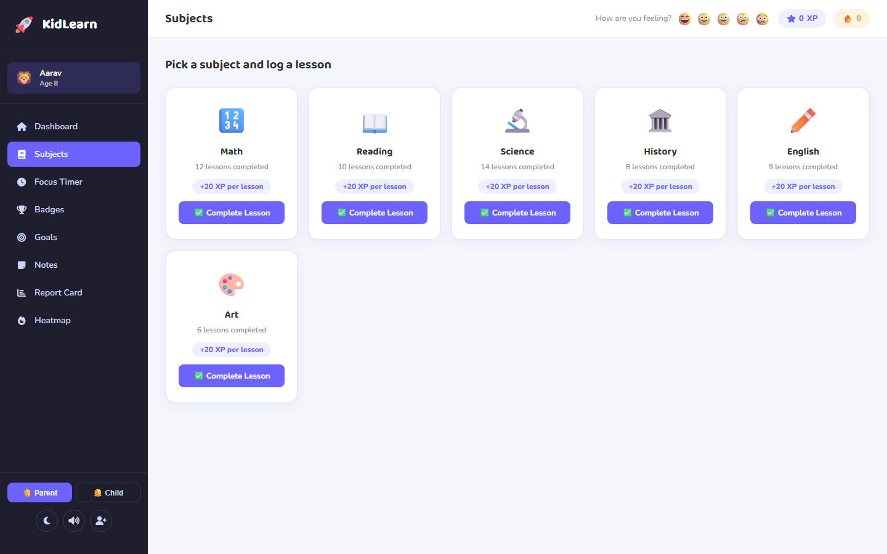
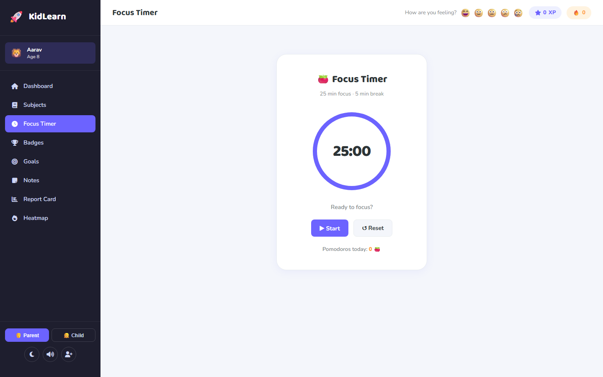
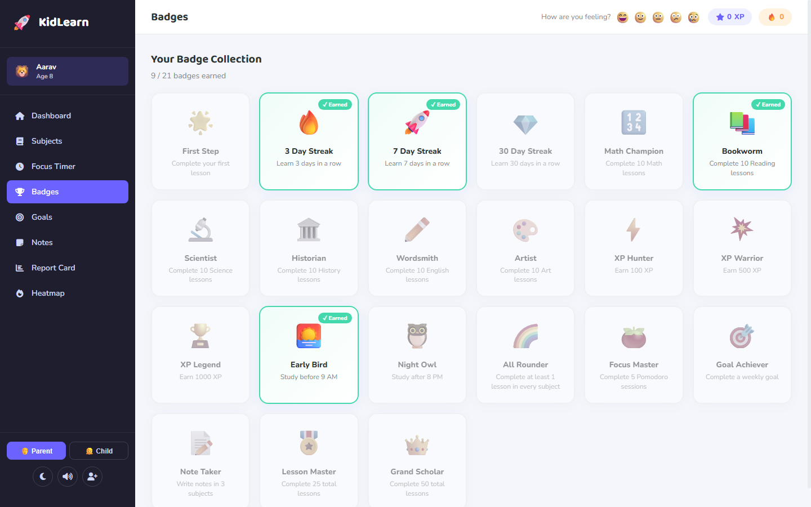
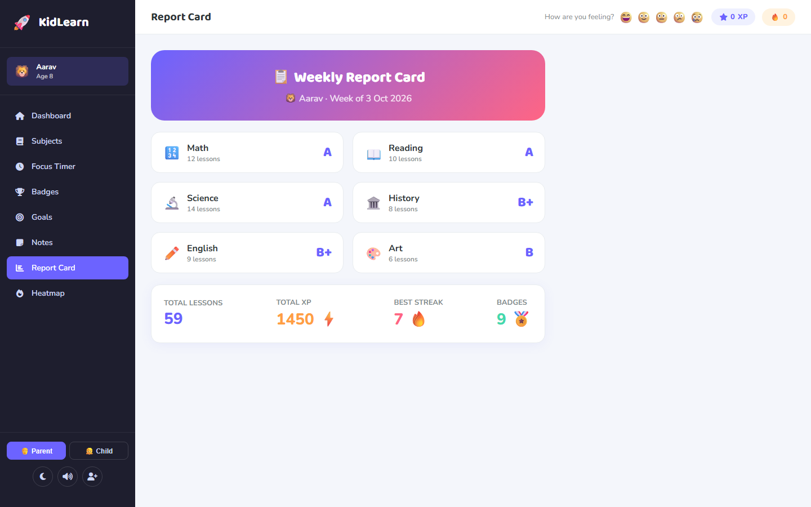
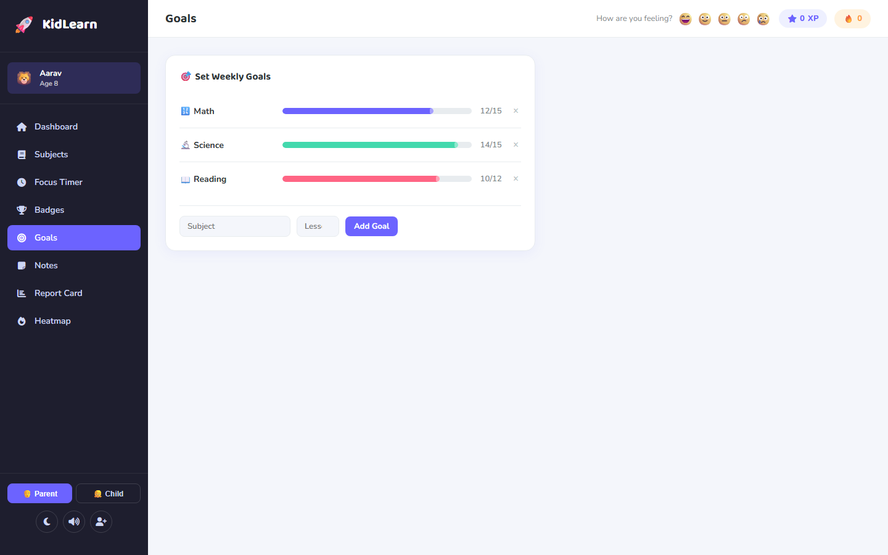
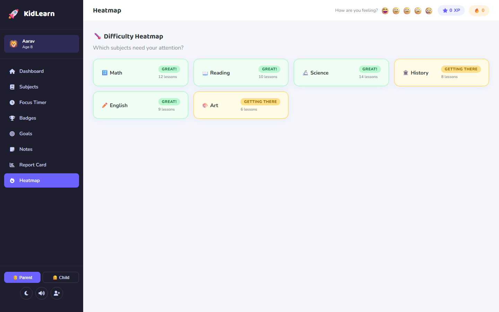
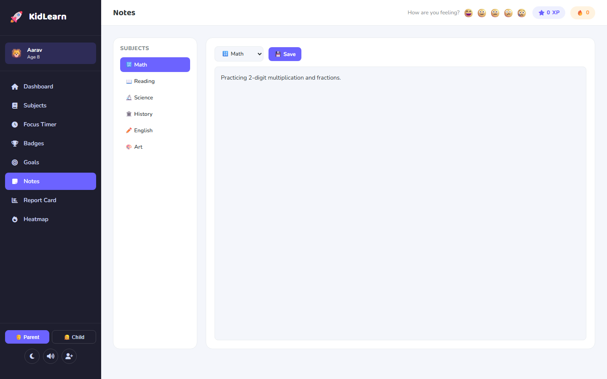

A gamified learning platform engineered 100% client-side in vanilla HTML/CSS/JS — featuring custom 2D Canvas charting, a 21-badge achievement engine, Pomodoro focus cycles, and automated weekly parent report cards with zero cloud tracking.







Rather than treating homework as a chore, KidLearn maps Nir Eyal's four-phase Hook Model directly into childhood cognitive development. By combining immediate visual rewards with compounding long-term milestones, students develop an intrinsic desire to log in and maintain daily consistency.
Daily streak reminders and personalized animal avatars (e.g. 🦁 Aarav, 8 years old). The child identifies with their chosen character and feels personal ownership over maintaining their daily study flame.
A 25-minute Pomodoro focus interval or a bite-sized 10-lesson practice session. Clear visual countdowns and zero complicated navigation reduce cognitive friction to zero.
Direct XP point accrual (+50 to +300 XP), randomized CSS confetti physics bursts, sound chimes, and tier-based badge unlocks (Bronze, Silver, Gold, Diamond).
Building a multi-day streak and watching the 6-axis "Learning DNA" radar polygon expand over time. Breaking the streak means resetting progress, incentivizing daily return visits.
| Badge Title | Category Tier | Unlock Condition & Rule Predicate | XP Bounty | Behavioral Reinforcement Target |
|---|---|---|---|---|
| First Step 🚀 | Onboarding | lessons.total >= 1 |
+50 XP | Overcoming initial activation friction |
| 3 Day Streak 🔥 | Consistency | streak >= 3 consecutive days |
+100 XP | Building weekend-to-weekday momentum |
| 7 Day Streak 🌟 | Consistency | streak >= 7 consecutive days |
+250 XP | Solidifying habitual daily engagement |
| Math Champion 🔢 | Subject Mastery | subjects.Math.lessons >= 10 |
+300 XP | Overcoming math anxiety through repetition |
| Bookworm 📖 | Subject Mastery | subjects.Reading.lessons >= 10 |
+300 XP | Encouraging sustained comprehension habits |
| Early Bird 🌅 | Circadian Habit | Study completed before 09:00 AM |
+150 XP | Morning routine reinforcement before school |
| Pomodoro Pro 🍅 | Focus Discipline | pomodoros.today >= 5 (125 mins) |
+200 XP | Deep uninterrupted cognitive endurance |
| Grand Scholar 👑 | Apex Mastery | lessons.total >= 50 across all subjects |
+1,000 XP | Long-term cumulative achievement prestige |
To eliminate bloated charting dependencies like Chart.js or D3 (which would add ~250KB of JavaScript overhead and delay page rendering on low-power school tablets), KidLearn draws its custom data visualizations completely from scratch on the native HTML5 Canvas 2D context.
The radar chart projects a child's relative mastery across six subjects (Math, Reading, Science, History, English, Art) onto a polar coordinate grid centered at \((c_x, c_y)\):
Each axis value \(v_i \in [0, 1]\) scales dynamically with completed lesson modules. Concentric polygon rings at 25%, 50%, 75%, and 100% provide immediate visual benchmarking.
Tracks the psychological correlation between self-reported child emotional valence (😄 Happy, 😃 Excited, 😐 Neutral, 🥱 Tired) and daily XP generation velocity:
Proves a strong positive correlation (+0.74) between positive emotional state and high study productivity, giving parents empirical insights into when their child learns best.
Click any stage node below or launch the live simulation to trace multi-child state machines, Pomodoro intervals, custom Canvas 2D geometry, and automated parent analytics step-by-step.
projects/KidLearn/storage.jsprojects/KidLearn/app.jsKidLearn was deliberately designed without a remote backend or third-party tracking scripts to guarantee complete privacy compliance (COPPA and GDPR-K standards) for children's educational data. Because all study streaks, lesson completions, and notes reside strictly in HTML5 localStorage, data does not synchronize across separate physical devices unless exported via JSON backup. The Pomodoro audio chimes synthesize pure tone frequencies on-the-fly using the Web Audio API without requiring any external audio MP3 asset downloads.